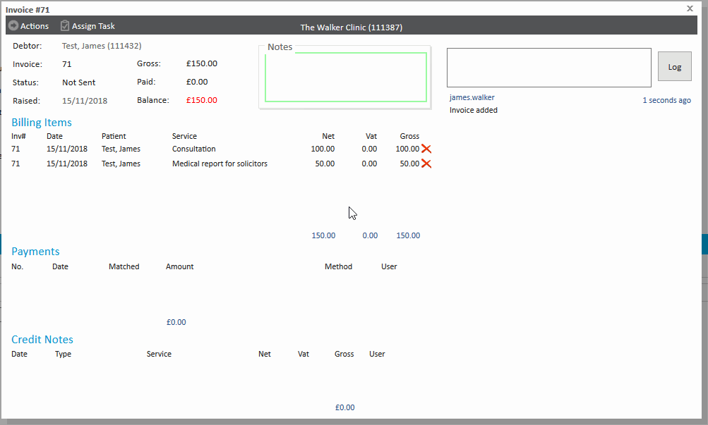
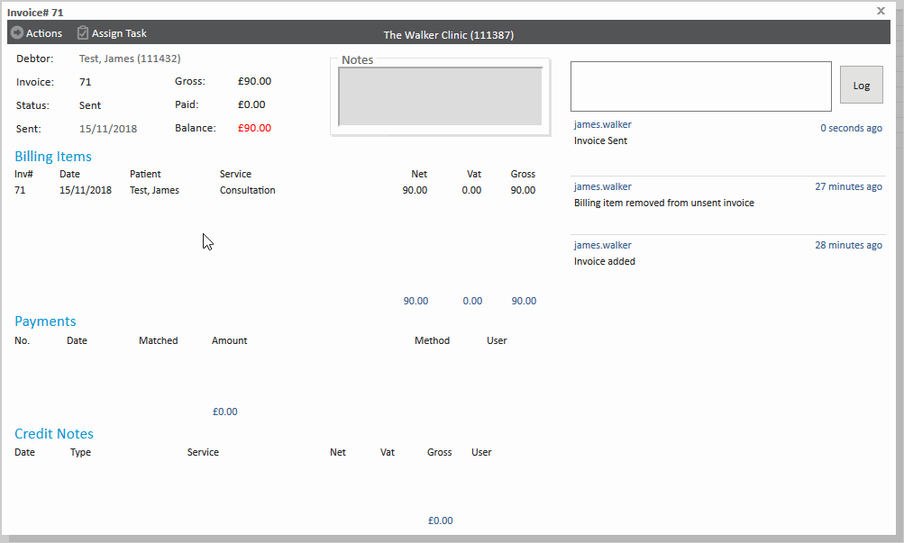
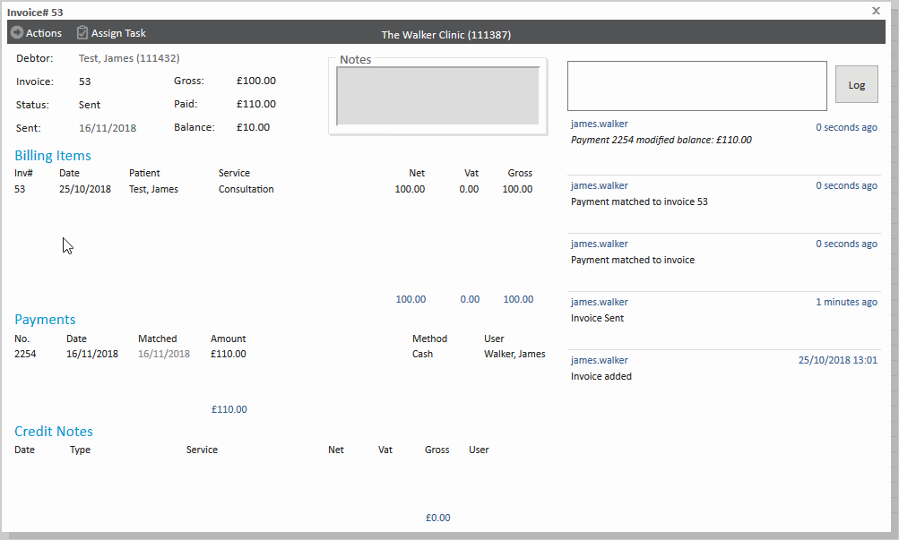
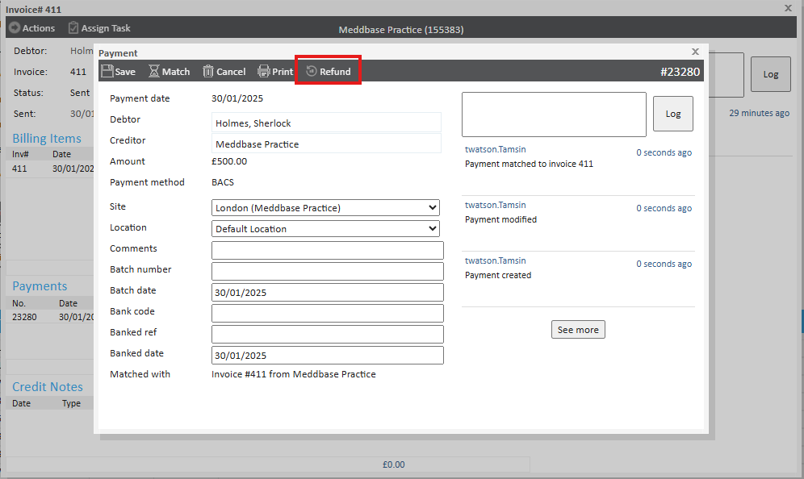
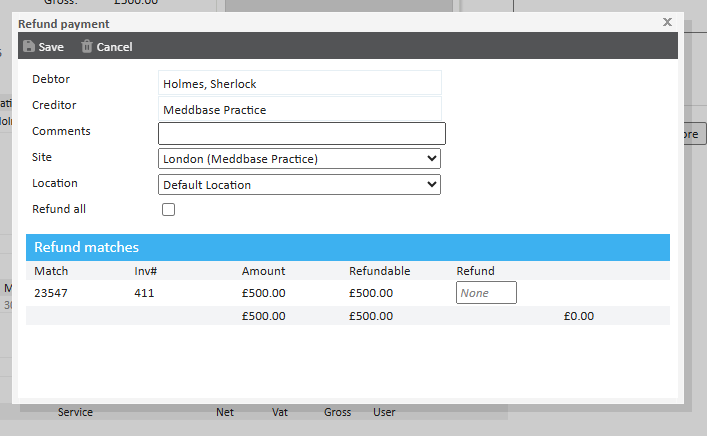

Invoices are a crucial part of financial record-keeping, but errors can occasionally occur. Whether an invoice has been incorrectly generated, paid, or credited, it’s important to correct these mistakes efficiently to maintain accurate billing records.
This article explains how to correct invoices that have been incorrectly generated, paid or credited.
If you need to make changes to an unsent invoice, this can easily be done within the invoice.

If you have marked an invoice as sent, but later realised that the incorrect amount has been invoiced, or the entire invoice has been incorrectly invoiced, you will need to raise a credit note. When an invoice is marked as sent, it is finalised and changes can't be made to the original invoice. See more at Marking an invoice as Sent.
A credit note is an adjustment issued to correct an invoice when the amount invoiced differs from what should have been charged. It is used to adjust balances before any payment is made, ensuring that the correct amount is recorded.
Unlike a refund, which returns money to the payer, a credit note simply adjusts the invoiced amount without transferring funds. It is always linked to a specific invoice and cannot be used across multiple invoices. Credit notes can be raised for the full invoice or specific billing items, allowing flexibility in corrections.
However, once a credit note is created, it cannot be deleted or modified. The balance adjustment is reflected in the system, typically shown in black font to indicate the credit. Importantly, a credit note does not affect the overall debtor-creditor relationship—its sole purpose is to amend an invoiced amount.
To raise a credit note, open the invoice and click Actions > Raise Credit Note.
In this example, the outstanding balance on the invoice is £90 and we are reducing it by £10 with a credit note. If the entire invoice has been incorrectly invoiced, you will need to raise a credit note for the full balance.
Note the invoice must have been marked as sent prior to raising a credit note against it.

If you have made a payment to an invoice incorrectly you can alter it by making a negative payment. For example, if you have made a payment for £110, but later realised it should only have been for £100, raise a negative payment for -£10 and the total payment value will be £100.

Alternatively, if you have Match Refund Payments enabled, you can click on the payment in the Payments section followed by Refund. Clicking this will allow you to specify the amount refunded and will log this on the invoice as a negative payment.
Refunding a payment in Meddbase does not physically return money to the patient or payer. Meddbase is a reconciliation tool, meaning any refund action recorded in the system is for tracking purposes only. The actual refund must be processed externally through the appropriate payment method outside of Meddbase. Only online payments made via Opayo will be trigger a physical refund to a patient.


If you have an invoice which has been marked as sent, and been paid, but you realise it is completely incorrect and you want to nullify the invoice and payment, follow these steps.
The invoice value will now be 0.00 and the payments will be 0.00.